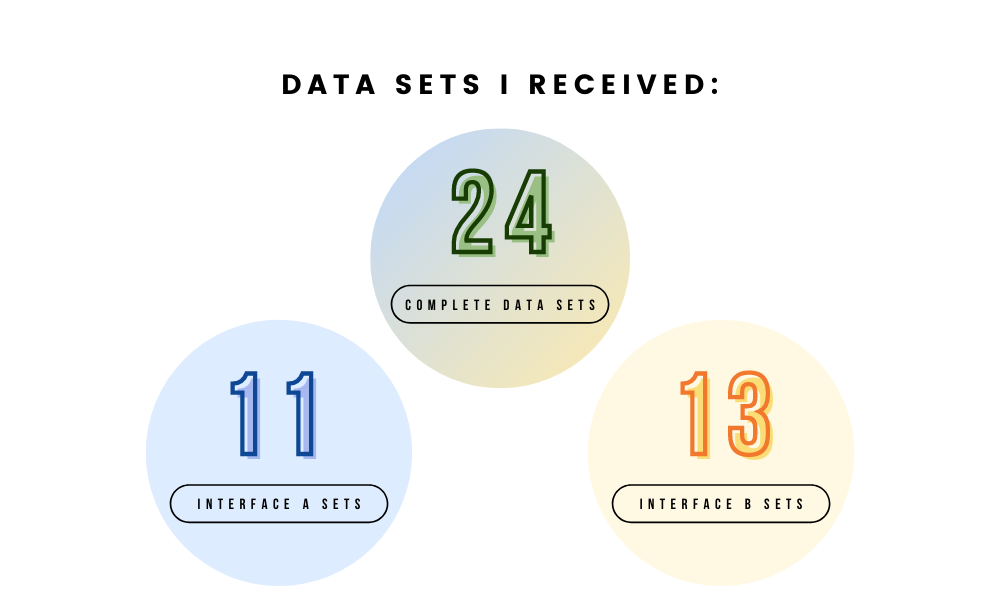
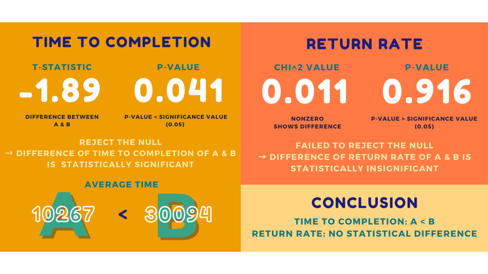

In this project, I explored how alternating the design layout of a page could influence how users efficiently interacted with a page. This is important, because the efficiency of pages can largely affect user experience. The process included the following steps:
I made 2 websites that sold cacti, with the following different features:
To measure efficiency, I ran statistical tests on two metrics for the two different pages: the time to completion of users adding $150 worth of cacti to their cart, and the users' rate of return to the home page. My hypotheses were:
The time to completion (i.e. the time it takes to order at least $150 of cacti) for Interface A is no different from the time to completion of Interface B.
The time to completion for Interface A should be less than the time to completion for Interface B.
The return rate (i.e. the number of times a user returned to the browsing page from the checkout page) for Interface A is no different from the return rate of Interface B.
The return rate for Interface A should be lower than the return rate for Interface B.
My data collection process involved having students completing a task of adding more than $150 worth of cacti to the shopping cart. Students received interfaces A and B at random. I collected the following data sets:
After running statistical tests, I received the following results:
